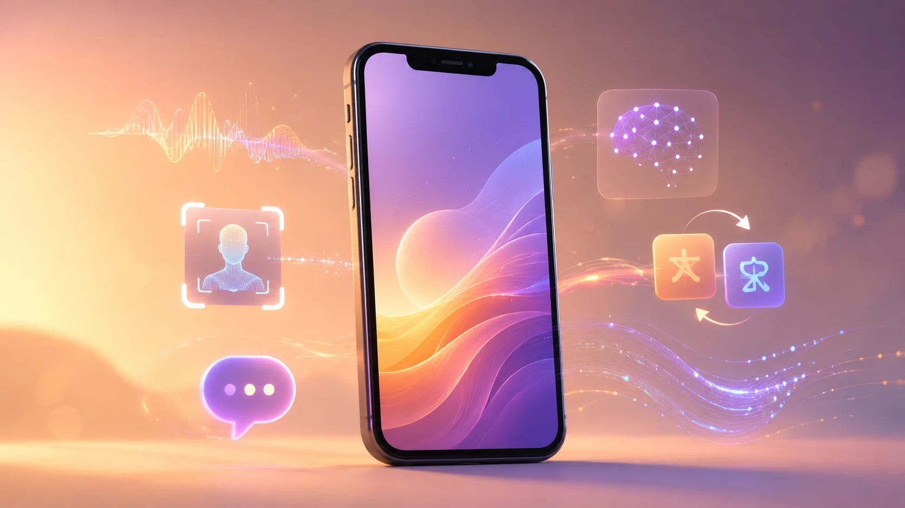
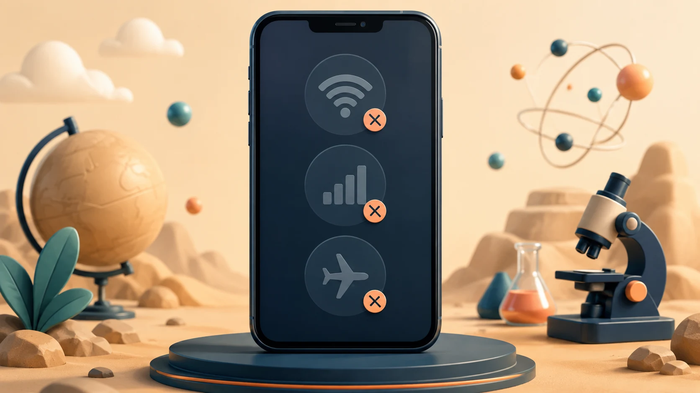
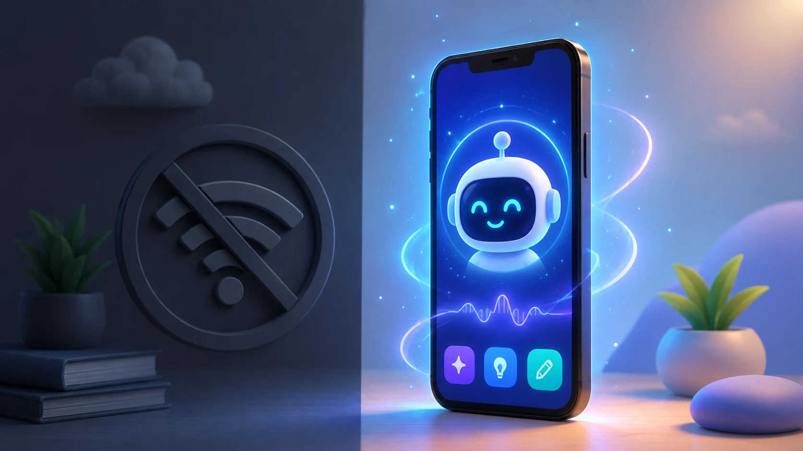
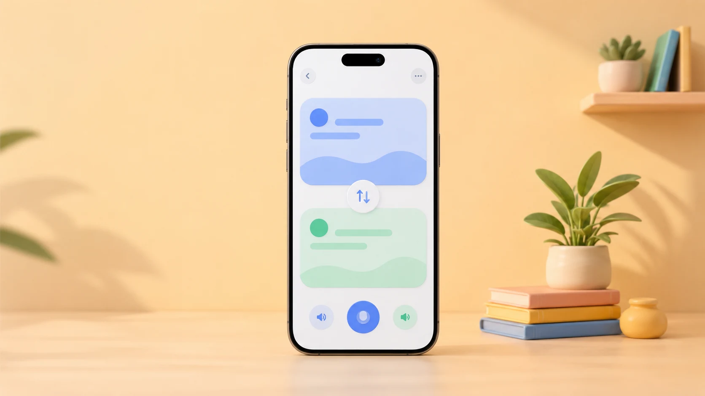
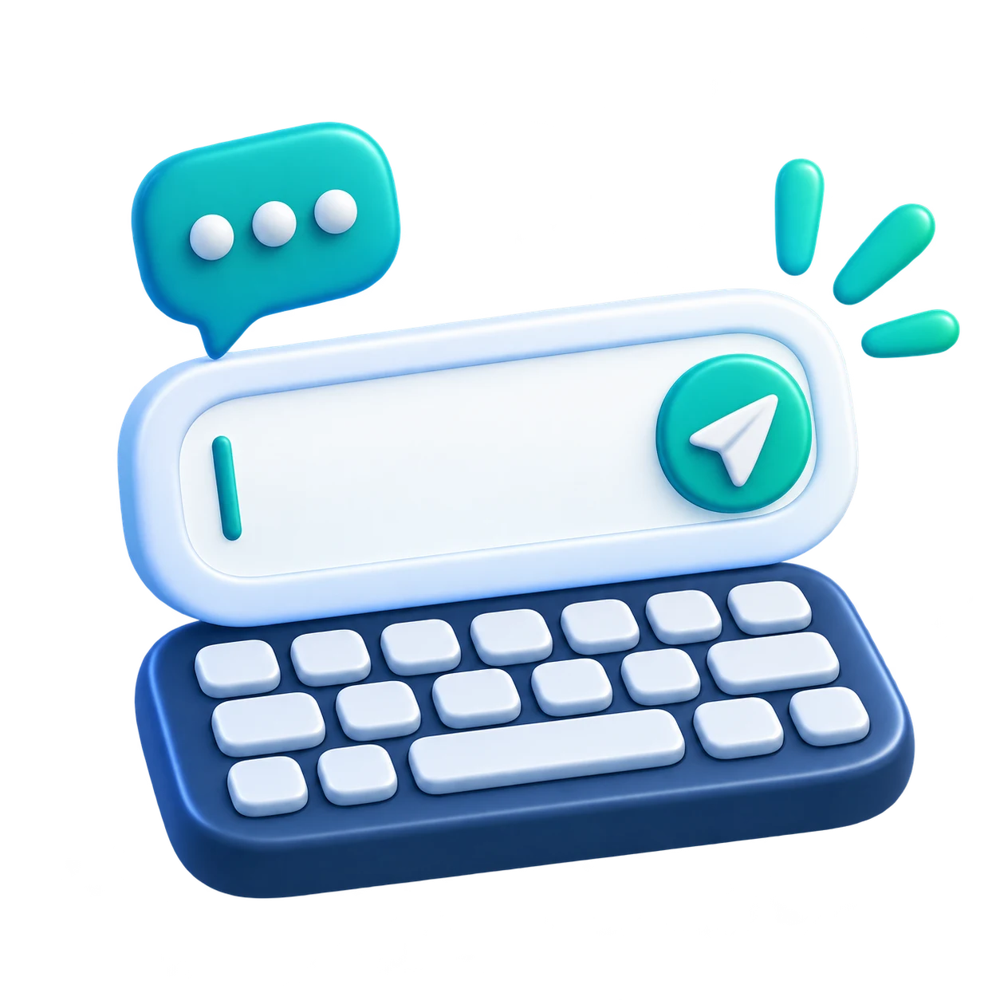
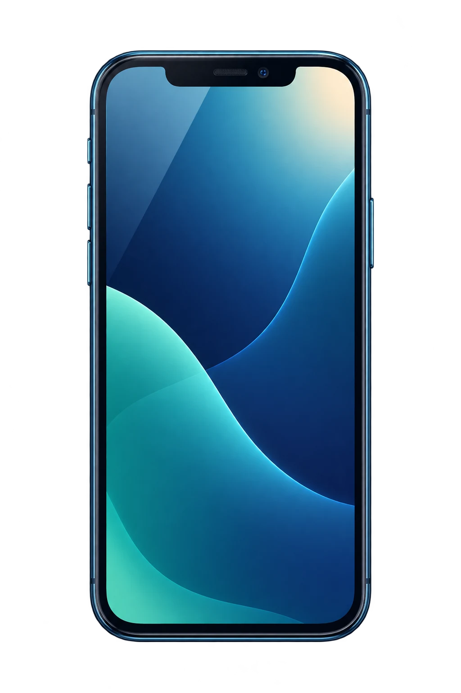
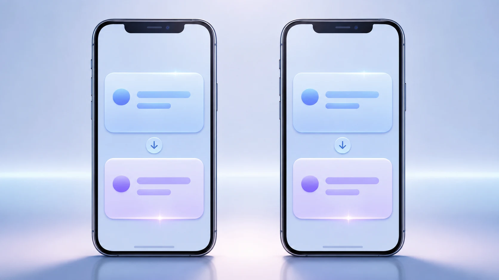
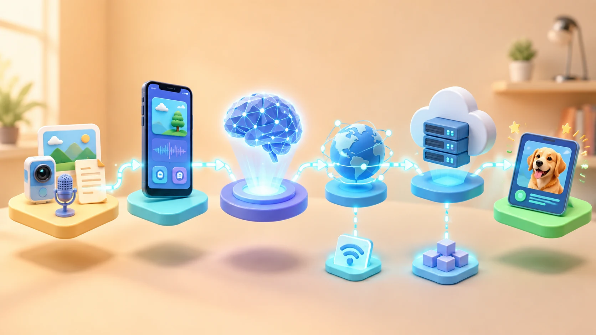
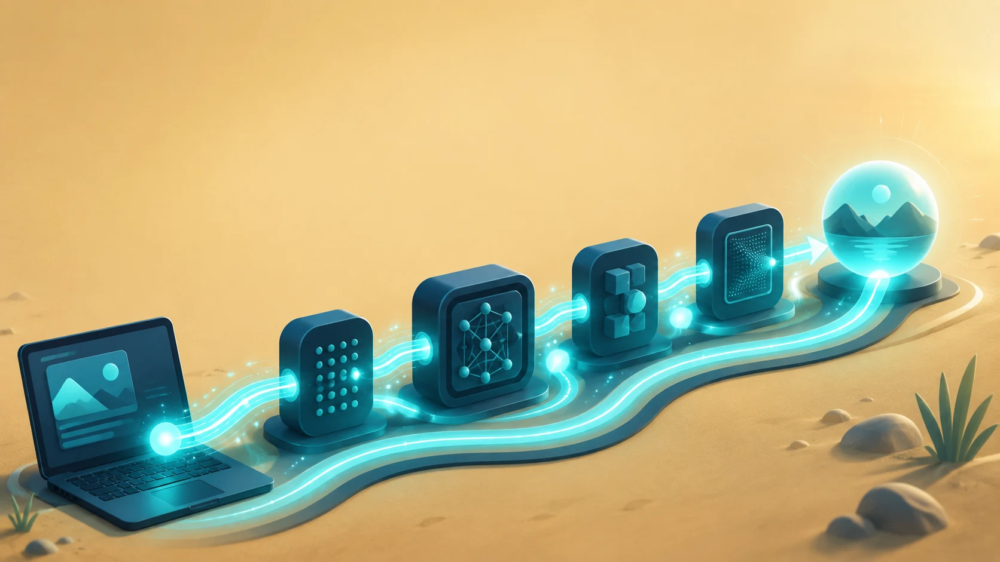

Where Is the AI?
Look closely. What's behind the screen?

Objectives
By the end of this session, I can…
AI Is Already Around You
Look around. How many AI features can you spot?
Kill the Internet
Your turn. Switch off all three connections.

Make Your Prediction
You're offline now. Which ones do you think still work?
Test It
Run the test. What keeps working offline?
Wait… It Survived?
Look. Where's the AI working now?

What You See
Look only at what you can see and tap.

Something Goes In
Follow each one in. What goes into the system?

A photo, a voice, some text… what do they share? They all go in.
Something Does the AI Work
Follow the input. What actually does the AI work?
So how does it know what to do? It leans on patterns it has learned.
Something Comes Out
Trace the whole path, from start to finish.
Something goes in. The model handles it. A result comes out.
Fix the Flow
Drag the missing piece where it belongs.
It Can Work Here
Watch where the model goes. Where's the AI working?

The AI model runs on the device.
But the model doesn't always stay here.It Can Work There
Follow the trail. Where's the model running now?
The phone barely lifts a finger. So who's doing the work? Computers far away.
Do we always have to choose only one?Or the Job Can Be Shared
Follow both paths. See how the work gets shared?
Sometimes the job is shared.
Where Is the Work?
Read each one. Where does the AI work happen?
They Look the Same
Compare the two screens. Spot any difference?

X-Ray Them
Watch closely. Where's the AI hiding in each one?
An AI Feature Is a System
Follow the parts. How do they work together?

A system is connected parts working together.
Build the Hidden System
Connect the pieces into a system that works.
Repair the System
Something's missing. Drag in the piece that fixes it.
What Changed in Your Head?
Finish the sentences. What changed most in your head?
The Next Mystery
Trace the path from Send to Result.
